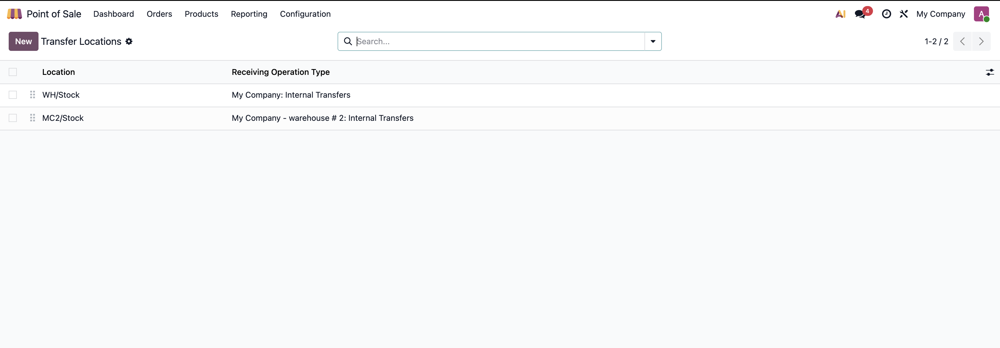
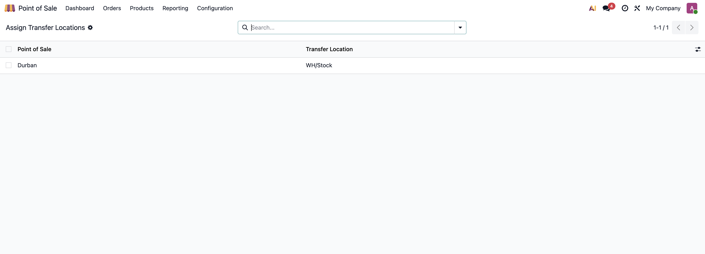
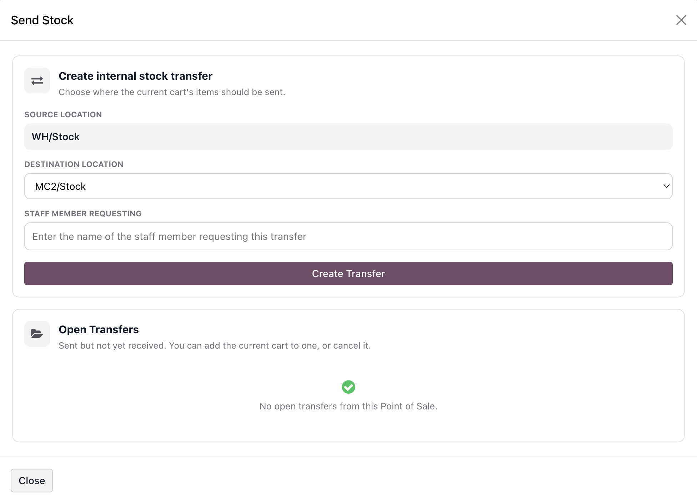
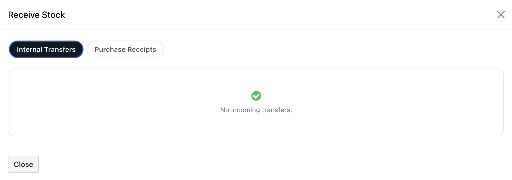
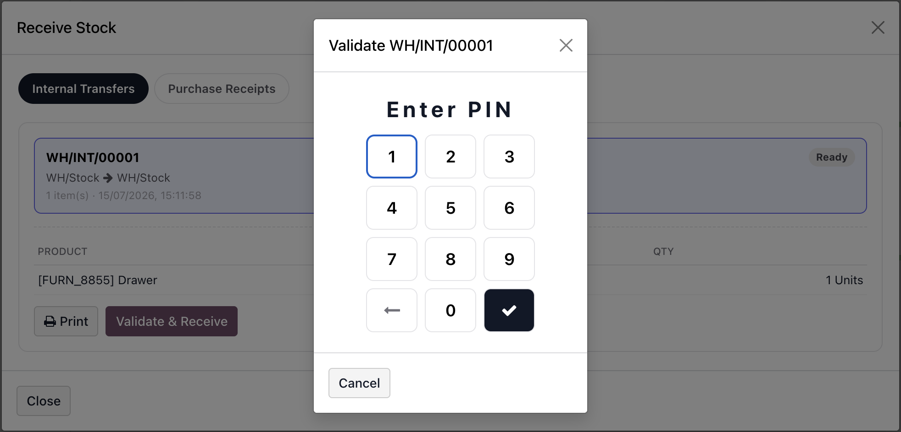
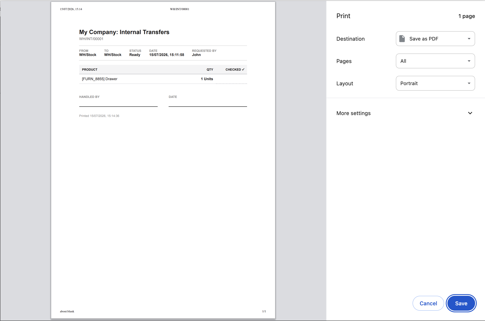

Retail IT POS Stock Transfer User Manual
This module lets cashiers create and receive internal stock transfers between store locations without leaving the Point of Sale screen. It also lets staff validate incoming purchase receipts from POS, with every receipt or transfer confirmed by an employee PIN and backed by a printable slip.
1. Introduction
Retail IT POS Stock Transfer adds two buttons to the POS product screen,
"Send Stock" and "Receive Stock", on any terminal set up to use them. It builds
on Odoo's standard internal transfer (stock.picking) workflow, so
every transfer created from a POS terminal is a normal, fully auditable internal
transfer that can also be reviewed and adjusted from the Inventory app.
Main purpose
Give store staff a fast, cart-based way to move stock between locations (for example, from a stockroom to a POS-facing shelf, or between two store locations) and to receive both internal transfers and purchase receipts addressed to their terminal, all without leaving the POS UI.
Operational flow
A cashier adds products to the POS cart, opens "Send Stock", picks a destination and enters their name, and the module creates and confirms a stock transfer. At the receiving end, a cashier opens "Receive Stock", picks the incoming transfer or receipt, and validates it after entering an employee PIN.
2. Configuration
Configuration happens in two steps, both under
Point of Sale > Configuration > Transfers.

| Field | Purpose |
|---|---|
Location |
The internal stock location being made available for transfers (for example, a stockroom or a store's selling location). Only internal-type locations can be added, and each location can only appear once in the list. |
Receiving Operation Type |
The internal operation type used whenever goods arrive at this location, whether sent by another POS terminal or received from a purchase order. This determines which operation type name and sequence appear on the resulting picking. |
Sequence |
Controls the display order of the list; drag rows to reorder. |

The second step, Assign Transfer Locations, is a simple editable
list with one row per POS terminal (pos.config). Set each
terminal's Transfer Location to the entry in the global list that
represents where that physical terminal is located.
Example configuration
A store has a Stockroom and a Shop Floor location, each with its own internal receiving operation type. Both are added to Transfer Locations. The stockroom's POS terminal is then assigned "Stockroom" and the shop floor's POS terminal is assigned "Shop Floor" under Assign Transfer Locations. Staff on the shop floor can now send stock to, or receive stock from, the stockroom terminal, and vice versa.
3. How It Works
The module adds one new model to track the pool of transfer-enabled locations, and two small fields on the standard stock transfer record so that POS activity stays traceable in the backend.
| Field / Data | Source | Rule |
|---|---|---|
retailit.pos.transfer.location |
New model | One record per transfer-enabled internal location, pairing it with the operation type used to receive goods there. This is the single source of truth for every destination offered in the Send Stock popup. |
pos.config.transfer_location_id |
Extends pos.config |
Which Transfer Location a given POS terminal represents. Determines both the terminal's own source location for sending, and the operation type used to find incoming transfers for receiving. |
stock.picking.transfer_requested_by |
Extends stock.picking |
Free-text name of the staff member who requested a transfer from POS, captured when the transfer is created. Only relevant for internal transfers and shown on the picking's Extra tab. |
stock.picking.transfer_validated_by |
Extends stock.picking |
The employee whose PIN was used to validate the transfer or receipt from POS. Set automatically when validation succeeds; not editable from the POS itself. |
Every transfer created or validated through this module is a standard
stock.picking record, so it also shows up in the normal Inventory
app transfer lists and reports - the POS popups are simply a faster front end
onto the same records.
4. Sending Stock
The "Send Stock" button only appears on a POS terminal once a Transfer Location has been assigned to it. It opens a dialog with two parts: creating a new transfer from the current cart, and managing transfers already sent from this terminal that haven't been received yet.

- Add the products and quantities to be transferred to the POS cart, then open Send Stock.
- The terminal's own Source Location is shown read-only. Choose a Destination Location from the other locations in the global Transfer Locations list, and enter the name of the Staff Member Requesting the transfer.
- Select Create Transfer. The module splits stockable and service products - service products cannot be moved by stock transfer and the cashier is warned they will be skipped. The transfer is created and immediately confirmed, a confirmation dialog appears with a link to view it in the backend, and the current cart is cleared automatically.
- Transfers sent from this terminal that have not yet been received appear under Open Transfers. Selecting one shows its product list and lets you print a packing slip, add the current cart's items to it (useful if more stock needs to go out before it's received), or cancel it outright.
5. Receiving Stock
The "Receive Stock" button, shown alongside Send Stock, opens a dialog with two tabs: Internal Transfers addressed to this terminal's location, and Purchase Receipts destined for it. Both work the same way once a transfer or receipt is selected.

- Open Receive Stock and switch to the relevant tab. Each list shows transfers or receipts that are waiting, confirmed, or ready, ordered by their scheduled date.
- Select an item to see its product and quantity list, then use Print to print a receiving slip for physical verification against the goods received.
- Select Validate & Receive. This opens an employee PIN pad - PINs are checked against the standard Odoo HR employee PIN and are verified server-side, so the PIN itself is never exposed to the browser.
- After a confirmation prompt, the module reserves and validates the picking for the full ordered quantity of every line, records which employee's PIN validated it, and reports the result.


6. Edge Cases & Important Notes
Cancel Transfer is destructive. Cancelling an open transfer from the Send Stock popup cancels the underlying picking in Odoo. It cannot be reopened from the POS - if the transfer is still needed, it must be recreated.
Add Cart to Transfer only works on genuinely open transfers. A transfer can only be appended to if it is still an internal-type picking, not yet done or cancelled, and was originally sent from this same terminal's source location. Any other case surfaces an explanatory message instead of updating the transfer.
Service products are silently skipped from transfers. Only stockable and consumable products can be moved by a stock transfer. If the cart contains service products when creating a transfer, the cashier is warned and those lines are left out of the transfer.
The PIN check is not tied to the logged-in cashier. Any active
employee's PIN can validate a receipt or transfer on any terminal, so the
employee recorded in Validated By (POS) may be different from
whichever cashier is logged into the POS session.
7. States and Reasons
Both the Send Stock and Receive Stock popups show a simplified status label
over the underlying stock.picking state, matching what a cashier
needs to know without exposing full backend terminology.
| Backend state | Meaning | Typical action |
|---|---|---|
draft |
Picking record exists but hasn't been confirmed. Transfers created from Send Stock are confirmed automatically, so this is rarely seen from POS. | No action needed from POS. |
waiting / confirmed |
Confirmed and shown as "Waiting" - stock has not yet been fully reserved for this transfer. | Wait for stock to become available, or check availability in the backend. |
assigned |
Stock has been reserved and the transfer shows as "Ready" - it can now be validated from Receive Stock. | Validate & Receive once the physical goods have been checked. |
done |
Validated and complete. No longer shown in any of the POS lists. | None - view history in the Inventory app if needed. |
cancel |
Cancelled, either via Cancel Transfer from POS or from the backend. No longer editable. | Recreate the transfer from POS if the stock still needs to move. |
8. Best Practices
- Physically verify stock on the shelf or in the stockroom before creating a Send Stock transfer - the transfer is confirmed and reserved as soon as it's created, so it should reflect what's actually being sent.
- Always enter the requesting staff member's full name (not initials or nicknames) in Staff Member Requesting, using a consistent naming convention across the store, so the packing slip and transfer history stay easy to trace back to a specific person.
- Because Validate & Receive always books the full ordered quantity with no adjustment step in the POS, physically count and match stock against the printed slip before validating. If the actual quantity received differs, stop and correct the transfer or receipt from the Inventory app instead of validating it from POS.
-
Keep employee PINs confidential and have each cashier enter only their own
PIN when validating, so
Validated By (POS)accurately reflects who physically checked the goods in. - Print the packing or receiving slip for every transfer and use it as a physical checklist - tick off each product line against the goods on hand before validating.
- Review the Transfer Locations list periodically (Point of Sale > Configuration > Transfers > Transfer Locations) to confirm the Receiving Operation Type assigned to each location still matches how goods should be received there, especially after adding a new store location.
- Only use Cancel Transfer for genuine mistakes. Since a cancelled transfer cannot be reopened from the POS, double-check with the requesting staff member before cancelling if there's any doubt.